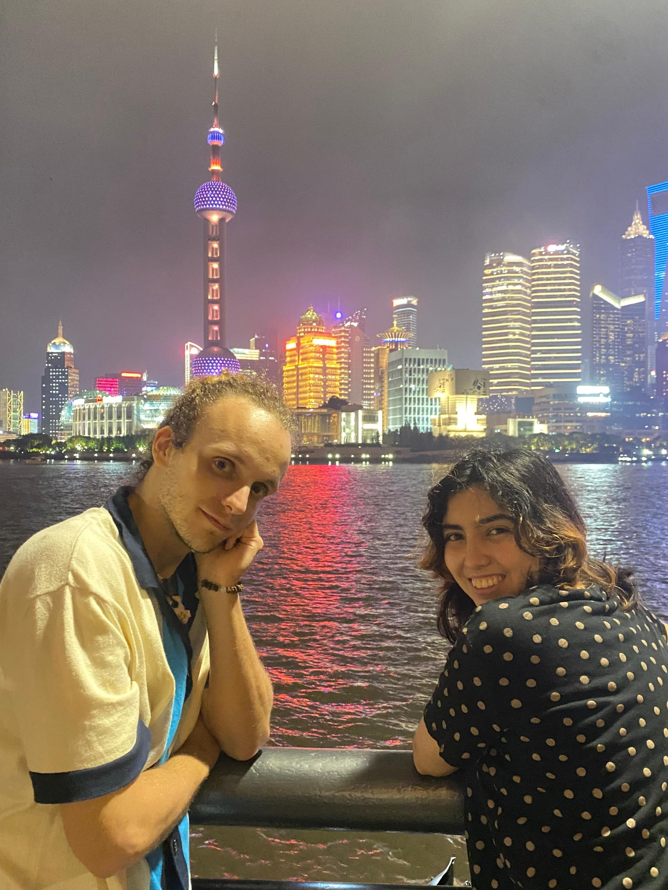

About Us

Renato: Conceptual exploration, philosophy, politics and ethics on our digital era.
Martina: Design and object-based research.
Together we reflect on the digital consumer and the evolving notion of userism.
Contact us :
renatopisani@proton.me
martina@baus.ec